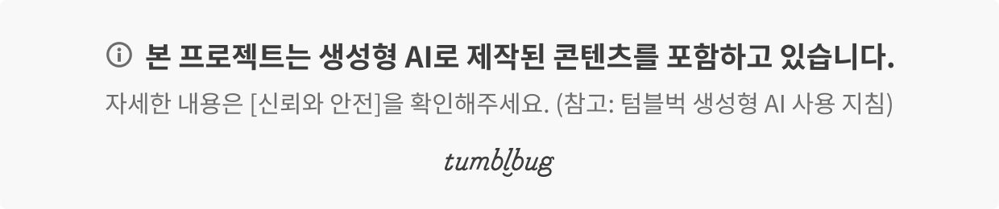
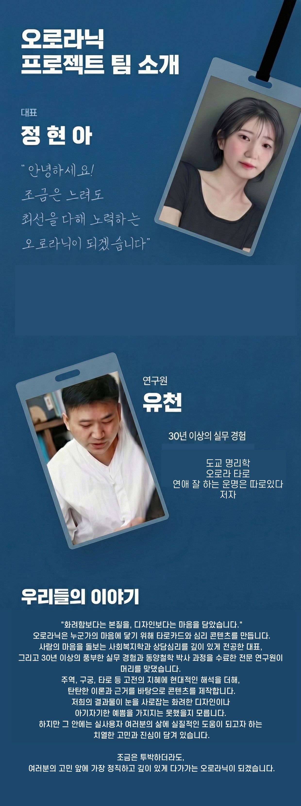

주역 64괘
각 괘의 상징을 산가지에 새겨 질문마다 하나의 메시지를 만납니다.
YUCHEON I-CHING · 64 HEXAGRAMS
이순신의 승리 비결로 전해지는 주역 산가지를 현대적으로 재해석했습니다. 64개의 괘와 스마트한 QR 해설로 오늘의 질문에 답을 찾아보세요.
오래된 지혜를 손에 잡히는 도구로.
전통의 상징과 디지털 해설을 연결한 새로운 주역 리딩 경험입니다.

FROM HISTORY TO TODAY
수를 셈하고 점을 치던 전통 도구 ‘산가지’에서 출발했습니다. 주역 64괘의 체계를 간결한 막대 형태에 담고, 스마트폰으로 바로 확인하는 해설을 더해 처음 만나는 사람도 자연스럽게 사용할 수 있도록 설계했습니다.


질문을 떠올리고, 괘를 뽑고, QR을 비추는 순간
64괘의 지혜가 나의 이야기가 됩니다.
THREE CORE FEATURES
어려운 주역 공부를 먼저 시작하지 않아도 괜찮습니다. 한 괘씩 만나며 상징과 해설을 익히도록 물성과 정보의 흐름을 함께 디자인했습니다.
각 괘의 상징을 산가지에 새겨 질문마다 하나의 메시지를 만납니다.
QR 코드를 스캔해 선택한 괘의 의미와 해석을 간편하게 확인합니다.
프로토타입을 거쳐 레이저 각인으로 완성한 오로라닉의 자체 제작 상품입니다.




REWARD COMPOSITION
텀블벅 프로젝트에서 소개한 구성 기준입니다. 최신 구매 가능 여부와 실제 구성은 상담을 통해 확인해 주세요.
산가지 64괘와 가이드북 카드를 함께 만나는 완성 구성.
64개의 괘를 직접 뽑아 오늘의 흐름을 살펴보는 핵심 구성.
괘의 상징과 해설을 이해하도록 돕는 휴대형 가이드.
MAKING & CARE
자체 제작과 레이저 각인 공정을 거쳐 산가지의 상징을 선명하게 표현합니다.
제작 공정상 미세한 표면 차이가 있을 수 있으며, 이는 제품의 고유한 특성으로 안내됩니다.
심한 인쇄 번짐이나 QR 인식 불량 등 사용에 영향을 주는 하자는 교환 기준에 따라 처리합니다. 자세한 기준은 구매 전 상담으로 확인해 주세요.
MEET THE 64 HEXAGRAMS
프로젝트 원문을 확인하거나 오로라닉에 제품 및 제작 상담을 남겨주세요.
프로젝트 수치 및 제품 정보 출처: 텀블벅 유천주역 프로젝트